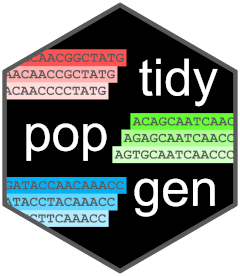

Compute the square of the Frobenius norm of a matrix
Source:R/square_frobenius.R
square_frobenious.RdThis function computes the square of the Frobenius norm of a matrix, which is the sum of the squares of the matrix elements, which provides a measure of of the total variance of the matrix. The code used here was outlined in an issue of bigstatsr by @privefl: https://github.com/privefl/bigstatsr/issues/83
Usage
square_frobenious(
X,
ind.row = bigstatsr::rows_along(X),
ind.col = bigstatsr::cols_along(X),
center = rep(0, length(ind.col)),
scale = rep(1, length(ind.col))
)